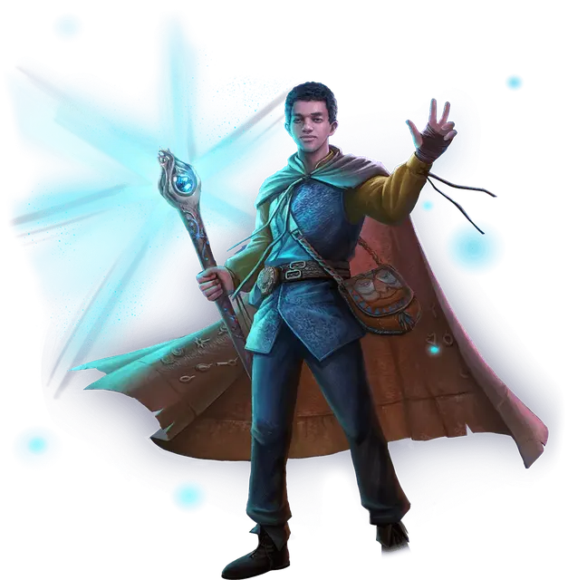

Саймон Аумар
Simon Aumar
Средний Гуманоид (Чародей), хаотично-добрый, именной НИП

Класс Доспеха 12 (15 с доспехами мага)
Хиты 99 (18к8 + 18)
Скорость 30 футов
| мод | спас | ||
|---|---|---|---|
| СИЛ | 8 | −1 | −1 |
| ЛОВ | 14 | +2 | +2 |
| ТЕЛ | 13 | +1 | +4 |
| мод | спас | ||
|---|---|---|---|
| ИНТ | 16 | +3 | +3 |
| МДР | 12 | +1 | +1 |
| ХАР | 17 | +3 | +6 |
Навыки Выживание +4, История +6, Магия +6, Обман +6, Религия +6
Чувства тёмное зрение 60 футов, пассивное Восприятие 11
Языки Общий, Драконий, Эльфийский
Опасность 5 (1800 опыта)
Бонус мастерства +3
Особенности
Наследие фей. Вы совершаете с преимуществом спасброски для того чтобы избежать или окончить на себе состояние очарован, и вас невозможно магически усыпить.
Особое снаряжение. Саймон носит сумку хранения [bag of holding], две пары камней послания [sending stones], и загробный жетон (см. Использование заклинаний).
Дикая магия. Когда Саймон получает 20 или больше урона из одного источника или получает урон от критического попадания, он должен совершить бросок по таблице «Волна дикой магии».
Действия
Мультиатака. Саймон совершает три атаки Боевым посохом или Снарядом хаоса. Он может заменить одну из этих атак использованием заклинаний.
Боевой посох. Рукопашная атака оружием: +2 к попаданию, досягаемость 5 футов, одна цель. Попадание: 2 (1к6 - 1) дробящего урона, или 3 (1к8 - 1) дробящего урона, если используется двумя руками, плюс 11 (2к10) урона силовым полем.
Снаряд хаоса. Дальнобойная атака заклинанием: +6 к попаданию, дистанция 60 футов, одна цель. Попадание: 13 (2к10 + 3) урона вида, определяемого броском 1к8: 1 - кислота; 2 - холод; 3 - огонь; 4 - силовое поле; 5 - электричество; 6 - яд; 7 - психическая энергия; 8 - звук.
Использование заклинаний. Бросьте 1к6. При выпадении 1 Саймон должен совершить бросок по таблице «Волна дикой магии». При выпадении 2 и выше Саймон накладывает одно из следующий заклинаний, используя Харизму в качестве базовой характеристики (Сл спасброска от заклинания 14):
• Неограниченно: волшебная рука [mage hand], малая иллюзия [minor illusion], разговор с мёртвыми [speak with dead] (Саймон должен держать загробный жетон, чтобы наложить это заклинание), фокусы [prestidigitation]
• 2/день каждое: волшебная стрела [magic missile], доспехи мага [mage armor], паук [spider climb], туманное облако [fog cloud]
• 1/день каждое: длань Бигби [bigby's hand], образ [major image]
Реакции
Укрывающий щит (3/день). Когда Саймон или другое существо, которое он может видеть в пределах 10 футов от себя, получает урон, он создаёт мерцающую сферу магической энергии радиусом 10 футов с центром на себе. Существа внутри сферы имеют сопротивление урону, который вызвал эту реакцию.
Описание
Саймон Аумар страдает под грузом своей фамилии. Хотя его происхождение восходит к эльфам и легендарному волшебнику Эльминстеру Аумару, в жилах Саймона бесконтрольно течёт его собственная чародейская дикая магия. Саймон ещё не научился управлять своей силой, и его заклинания взрываются или исчезают, казалось бы, наугад.
Хотя его терзают сомнения, храбрый молодой маг заслужил свое место в команде Эджина. Он лучше всего действует под давлением, инстинктивно высвобождая свою магию в трудную минуту. Как он будет дальше раскрывать свой потенциал и что делать со своим изменчивым даром, ещё предстоит увидеть.